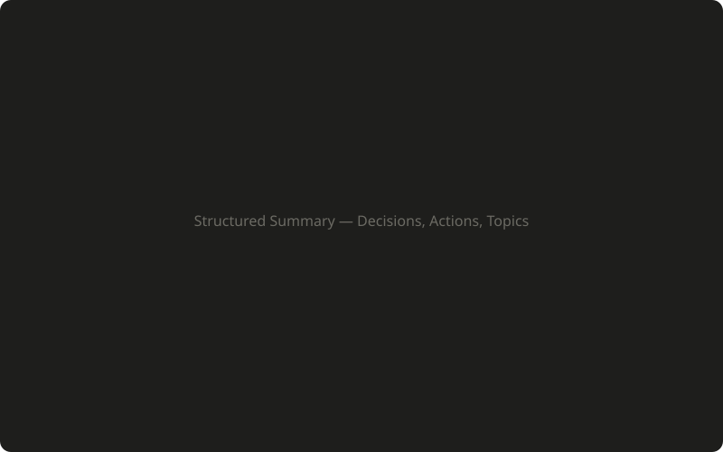
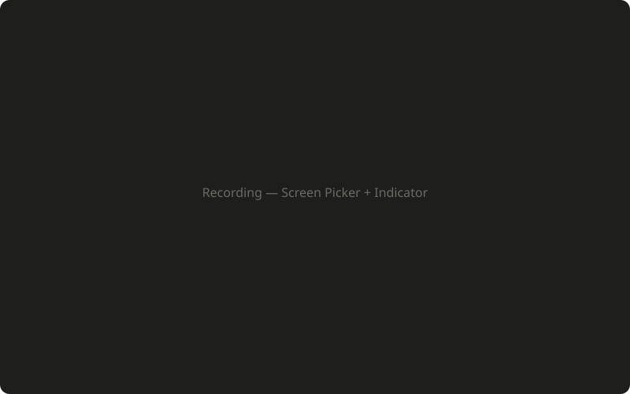
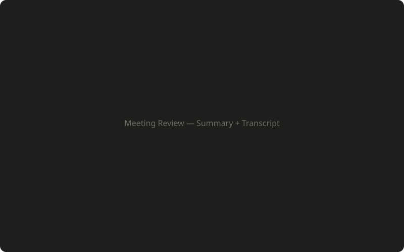

One app that records, transcribes, summarizes, and searches your meetings. All on your machine.
After every meeting, AutoDoc produces a structured summary organized around what matters most.


Hit record, pick your screen or window, and AutoDoc handles the rest. Audio, video, and transcript — all captured locally.
"What did we decide about the Q3 roadmap?" Search across every meeting, or ask a question and get an answer grounded in what was actually said.

Summary on the left, full transcript on the right. Audio playback synced to the text. Scrub to any moment and hear exactly what was said.
Download AutoDoc and try it on your next meeting.